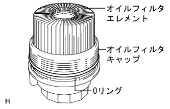
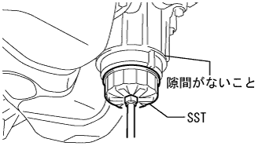
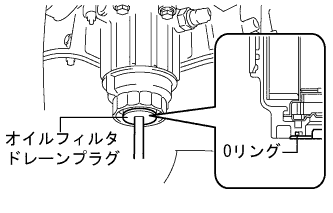
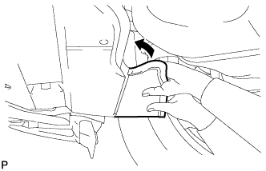

Oil Filter Element (2GR-FE) Installation |
| 1. Install Oil Filter Element |
 |
Using brake cleaner, clean the inside, threads and O-ring groove of the oil filter cap.
Apply a small amount of engine oil to a new O-ring (for cap) and install it to the oil filter cap.
Set a new oil filter element into the oil filter cap.
Remove any dirt and foreign matter from the installation surface and inside on the engine side.
Apply a small amount of engine oil to the O-ring (for cap) again, and install the oil filter cap.
 |
Using SST, tighten the oil filter cap.
 |
Apply a small amount of engine oil to a new O-ring (for drain plug) and install it to the oil filter cap.
Install the oil filter drain plug to the oil filter cap.
| 2. Add Engine Oil |
| 3. Inspect Engine Oil Level |
Warm up and stop the engine; after 5 minutes, check that the oil level is between the L and F marks on the oil level gauge. If the oil level is low, check for leaks and add oil up to the F mark.
| 4. Inspect for Oil Leaks |
Start the engine and check that there is no oil leaking from the joints of the oil filter cap, oil filter drain plug and oil pan drain plug.
| 5. Install Oil Filter Element Service Hole Cover |
 |
As shown in the illustration, fold the service hole cover toward the top of the vehicle, then unfold the crease.
 |
Install the service hole cover with the clips.